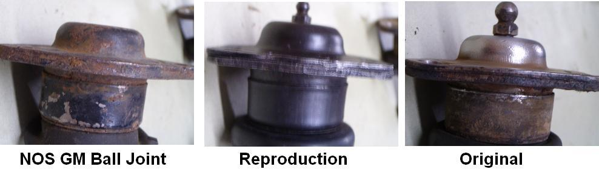
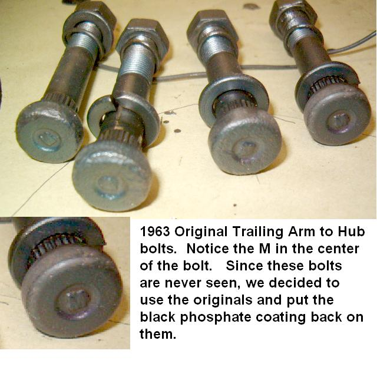
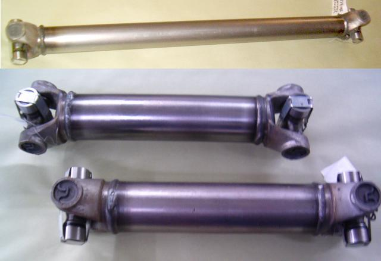
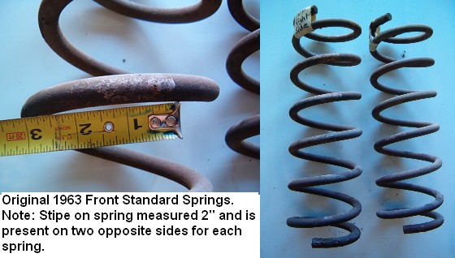
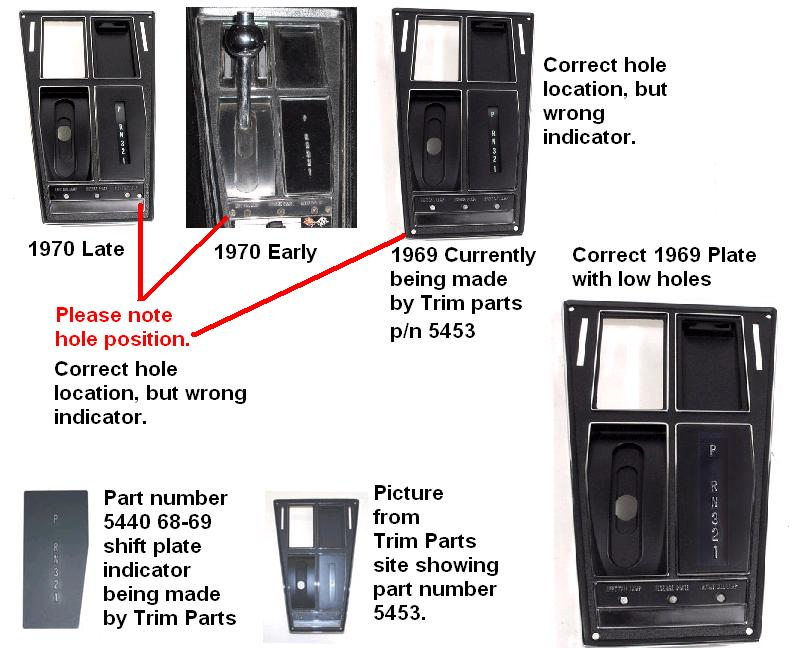
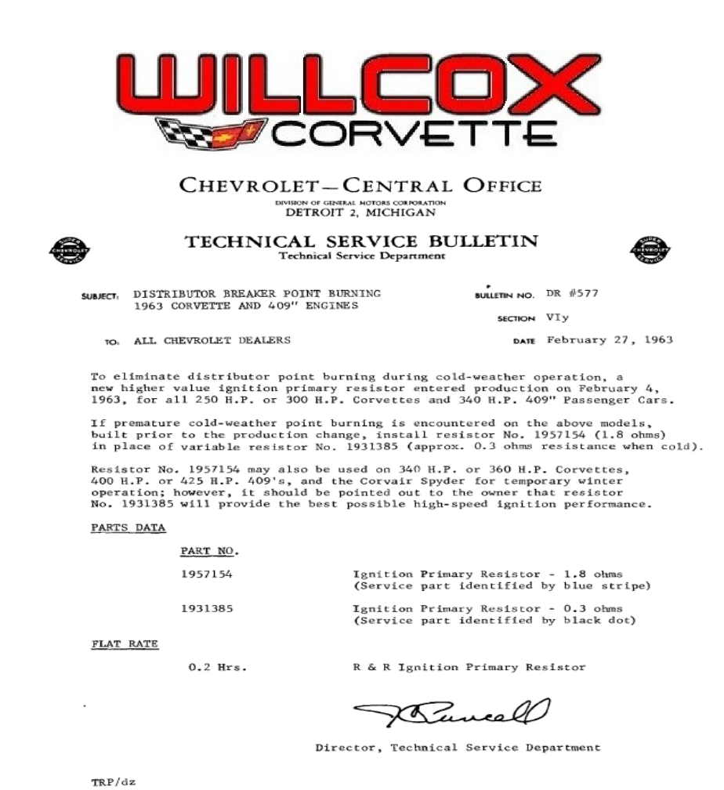
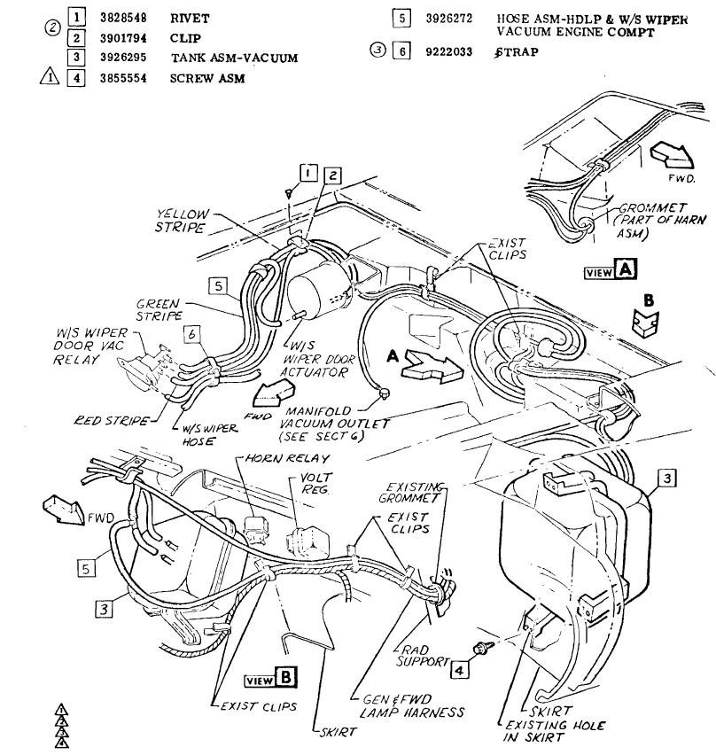

Articles
1953-2008 Corvette “Reproduction 53” Sales Flier From
Supporting Documentation
1963 Corvette Ball Joint Comparison

1963 Corvette Trailing Arm Support

1963-1979 Corvette Drive Shaft and Half Shafts

1963-1982 Corvette Power Steering Hose Route Pump To Valve Small Block
Corvette Power Steering Hose Route Pump to Valve Small Block. 1963-1982 Supporting Documentation
1963 Corvette Front Springs


1963-1964 Corvette Technical Service Bulletin 614 Convertible Top Protective Cover Removal
CONVERTIBLE TOP PROTECTIVE COVER REMOVAL Supporting Documentation
1963 Corvette Technical Service Bulletin 610 Spare Tire Lock Boot Added
Spare tire lock jamming or difficult operation may be due to an accumulation of dirt or salt deposits in the lock cylinder. The e~posed location of the spare tire lock makes it susceptible to corrosion and subsequent malfunction. To prevent … Continue reading
1963 Corvette Technical Service Bulletin 608 Parking Brake Cable Clip Failure
The 1963 Corvette right hand parking brake cable housing is retained to the frame crossmember at the forward end by a U-shaped clip (see 1963 Corvette Shop Manual, page 5-3, fig. 5). During application of the parking brake, movement of … Continue reading
1963 Corvette Technical Service Bulletin 605 3 And 4 Speed Transmission Bearing Retainer
The 3 and 4-speed transmissions used in all 1963 Chevy II, Corvette and 1000 Series (except with 409 engine) incorporate an aluminum clutch gear bearing retainer. This retainer, under severe operating conditions may “gall” thereby preventing the clutch release bearing … Continue reading
1963 Corvette Technical Service Bulletin 595 Shifter Lever Vibration
Vehicles equipped with a Powerglide or 4-speed transmission which incorporates the floor mounted shift lever may be subject to a “buzzing” type noise as a result of shift lever to mounting bracket vibration and/or excessive shift lever to guide plate … Continue reading
1963 Corvette Technical Service Bulletin 592 Convertible Top Protective Shipping Cover
The St. Louis Assembly Plant is now shipping Corvette Convertible Models with a new improved type spray-on polyurethane protective shipping cover. As this material cures, it forms a translucent thin plastic film over the fabric top covering to afford the … Continue reading
1963 Corvette Technical Service Bulletin 577 Distributor Point Burning. Resistor Change


1963 Corvette Technical Service Bulletin 560 Oil Gauge Dipstick Checking Chart
The following chart may be used as reference when checking crankcase and oil filter capacities, and oil gauge and gauge tube dimensions for all 1963 gasoline and diesel engines. In the event of an oil consumption complaint, engine oil level, … Continue reading
1963 Corvette Technical Service Bulletin 556 Identifying 1963 Component Units By Production Code
This bulletin has been prepared to assist Chevrolet and Chevrolet Dealer Personnel in identifying 1963 vehicles and vehicle component units by identification or production code number. Supporting Documentation
1962 Corvette Technical Service Bulletin 554 Cranshaft Thrust Bearing Failure W/Powerglide
Failure of the crankshaft thrust bearing on 1000 Series and Corvette 327 V-8 engines on vehicles equipped with Powerglide transmissions may be caused by “ballooning” of the converter under certain operating conditions especially those involving high RPM’s. A design change … Continue reading
1962 Corvette Technical Service Bulletin 537 Transmission Identification
This information supplements the Transmission Serial Prefix Letters issued in the 1962 Passenger Car and Truck Unit Serial Numbers Bulletin, TSB #757, DR #504, Page 10. The current transmission prefix letter or letters, plant designation, transmission type, usage and gear … Continue reading